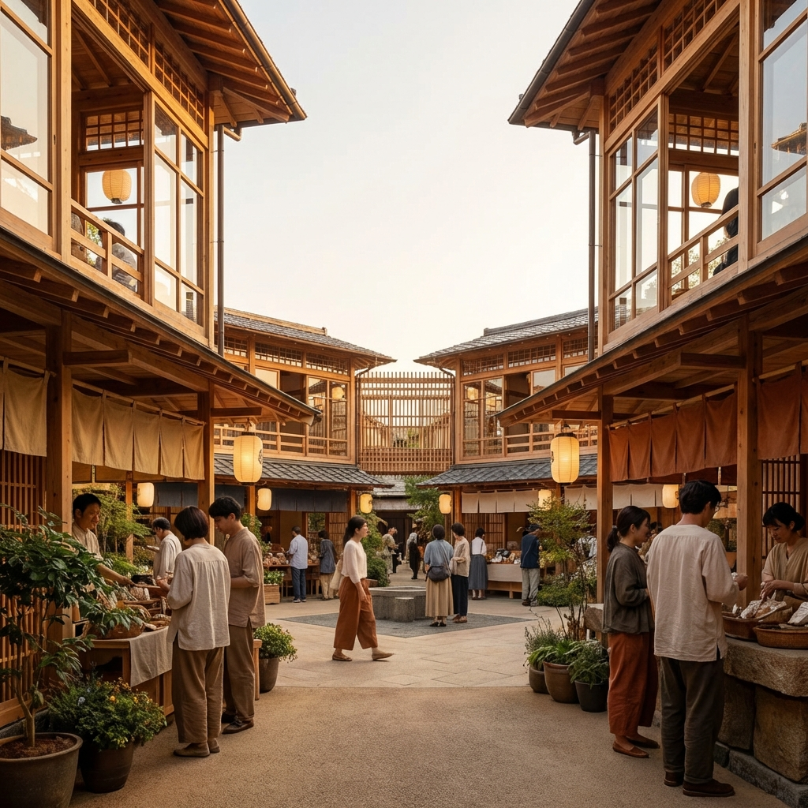
お金は本来、「ありがとう」を
交換する道具でした…

元々、お金とは価値をスムーズに交換するための『手段』に過ぎませんでした。
しかし現代では、いつの間にか「交換」ではなく、「増やすこと」自体が目的となってしまっています。
結果、経済は循環しなくなり、格差も拡大し、お金が「支配のための道具」となってしまっています。
「交換の道具」だったはずのお金が、いつしか私たちを「支配する主人」に変わってしまったのです。
評価されない「本当の価値」

この仕組みの中では、何事も「お金になるかどうか」が、すべての評価の基準となります。
結果、その仕事は「どれだけ他人(社会)の役に立つか」よりも、「どれだけ数字（収益）になるか」が優先されています。
そのせいで、命を支える農業や介護、子供や社会の未来を創る教育といった「本当に価値のある仕事」が正しく評価されない歪みが生まれています。
やりたいことができない社会
また私たちは「儲からないから」という理由だけで、 やりたいことや、価値ある活動を諦めなければならないことがあります。
これが意味することは、このシステムのせいで、私たちの生き方や多様性そのものが縛られているのです。
「目先のお金になるかどうか」という狭い物差しが、 あなたの、そして社会の多様な可能性を縛っています。
私たちは今、お金をもう一度「ただの道具」に戻す必要があります。
交換リングという考え方
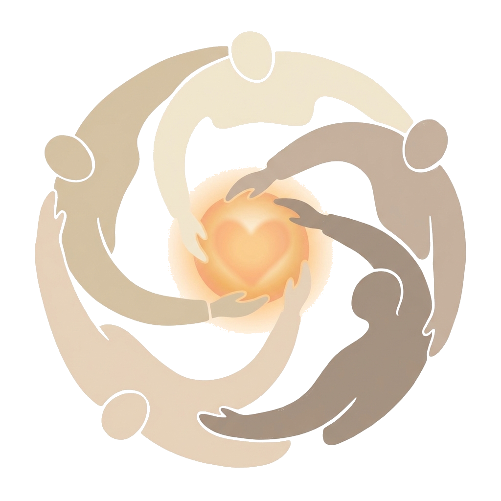
今、私たちに必要なのは「いかにお金を増やすか」ではありません。 それは、終わりのない過当競争へと向かう道です。
本当に必要なのは、もう一度「ただの交換手段」に戻すことです。
支配の象徴となってしまった今のシステムから、少しだけ距離を置き、ただ純粋に「ありがとう」を交換し合える仕組み。
それが地域通貨であり、「交換リング」という新しい選択肢です。
現代のミスマッチを解消する
交換リングコミュニティ「楽市」

楽市は、『利益』の最大化ではなく、『循環』の最大化を目指します。
仕組みはとてもシンプル。昔から日本にある「お互い様」の精神と同じです。
自分の得意や余剰を誰かに提供し、ポイントを受け取る。
誰かの手助けを受け、感謝としてポイントを渡す。
楽市は、昔の社会では暗黙で成り立っていた「お互い様」の精神を、「楽ポイント」で可視化するアプリです。
これまで「0円」とされてきたあなたの知識やお裾分けの野菜、大切にしていた愛用品を滑らかに循環させ、お金への依存から少しずつ自由になることを目指しています。
楽市の特徴：お金と何が違うのか？
「楽市」はお金（法定通貨）とは全く異なる、2つのコンセプトがあります。
1. 上限と下限がある
「楽ポイント」には、あえて限界を設けています。
- 貯め込みの禁止:
上限に達すると、それ以上は貯められません。「稼ぎすぎ・貯めすぎ」に意味がなくなる設計です
貯めることに意味がなくなれば、適切な循環が生まれ、格差も権力関係もなくなります。 - 自発的な貢献:
下限に達すると、一時的に「受け取ること（御恩）」ができなくなります。
「もらうばかり」ではなく、「次は自分に何ができるか」という貢献の心が、自然に芽生える仕組みです。
2. 理想は「ゼロ（中庸）」の状態
楽市の経済圏では、稼ぐことに意味はないので、プラスやマイナスの数字に執着する必要はありません。
みんなが中庸を目指すことで、結果的により多くの循環が起こる仕組みになっています。
- マイナスは「信頼の先払い」: 一時的にマイナスになっても、それは「いつか返せばいいもの」。負い目を感じる必要はありません。
- プラスは「循環の停滞」: 溜まりすぎたプラスは、むしろ循環を止めているサイン。誰かに譲るタイミングです。
多くの人と交流し、交換を楽しみながら、「ゼロ（中庸）」に近い状態を保つ。
どちらかに偏りすぎないフラットな関係こそが、私たちが目指す理想のコミュニティです。
| 項目 | 現代のお金（円） | 楽ポイント |
|---|---|---|
| 目的 | 蓄積・独占 | 循環・共有 |
| 理想の状態 | 多ければ多いほどいい | ゼロ（中庸） |
| 心の動き | 減るのが怖い（不安） | 巡るのが楽しい（安心） |
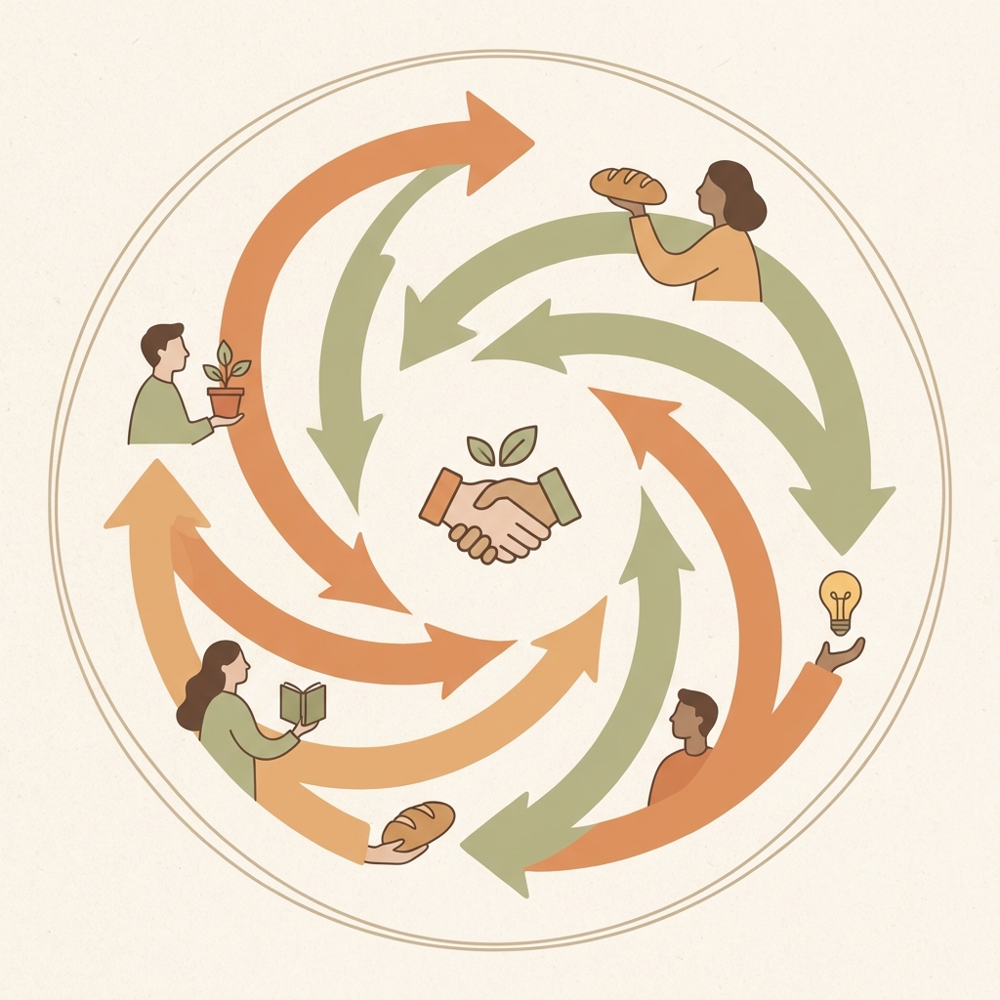
利益を溜め込むのではなく、感謝と共に循環させる。
それが「楽市」の経済圏です。
楽市の3つのシーン
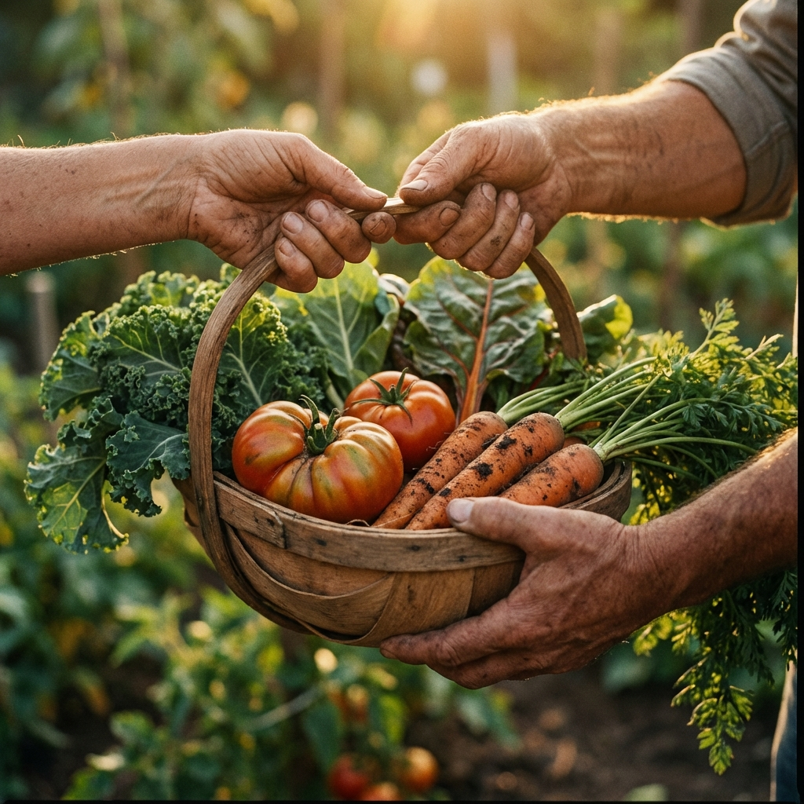
奉公する - 誰かを助ける
自己の「余剰」を、誰かの「喜び」へ
ビジネスではなく、純粋な価値の交換を実現します。
- 余剰の提供: 家庭菜園の野菜を譲る、不用品を譲り渡す。
- 特技の分譲: 趣味の手芸、占術などを提供する。
- 日常の助力: 家具の組立の手伝い、買物の代行、話し相手になるなど。
他者へ価値を届けた証として、楽ポイントが加算（+）されます。
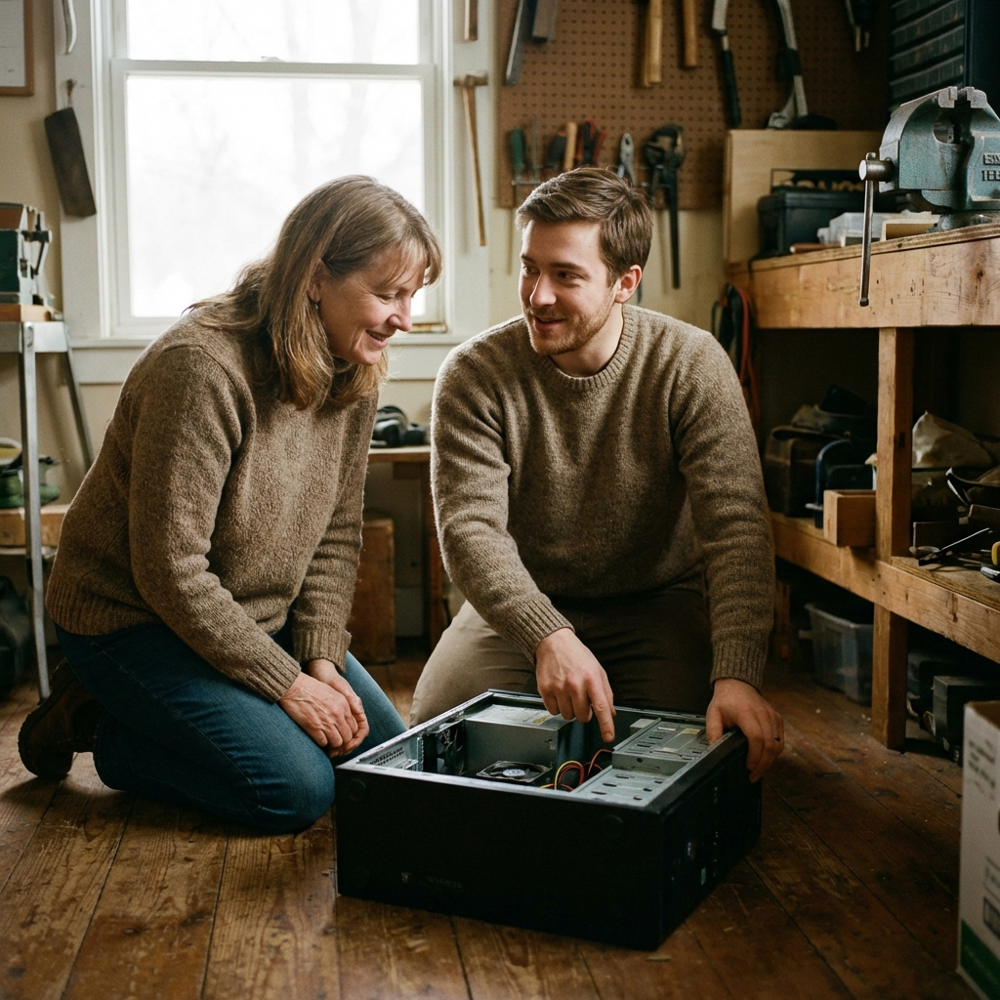
御恩を受ける - 助けを受け取る
他者の「余剰」を、自己の「糧」へ
自己犠牲やお金の力ではなく、コミュニティメンバーの余剰を分かち合い、相互扶助を実現します。
ビジネスを介さず、信頼に基づく「助け合い」を形にします。
- 物品の要請: 必要な食材や道具を借りる、あるいは不用品の譲り受ける。
- 技能の享受: PC設定や修理を手伝ってもらう、翻訳など専門的な知識を借りる。
- 人手の依頼: 荷物の運搬や庭仕事の手伝い、日常の些細なことを代行してもらう。
他者の価値を受け取った証として、楽ポイントが消費（-）されます。
楽座 - 地域経済に寄与する
地域内のお店を知るきっかけに
単なるビジネスを超えた「顔の見える交流」を生み、地域経済の自立と活性化を目指します。
- 来店のきっかけ: サービスや商品を気軽に体験し、本業へ繋がる新しい縁を作る。
- 地域の再発見: 広告には載らない地元の名店やこだわりの価値を、住民が直接知る。
- 経済の自立: 地域内での相互扶助による強い地域経済を生む。
「楽市」は、既存の貨幣経済を拒絶するものではありません。
それと補完し合い、適切な「共存」を図ることで、地域経済に新たな選択肢と活気を生み出すことを目指しています。
具体的な交換例
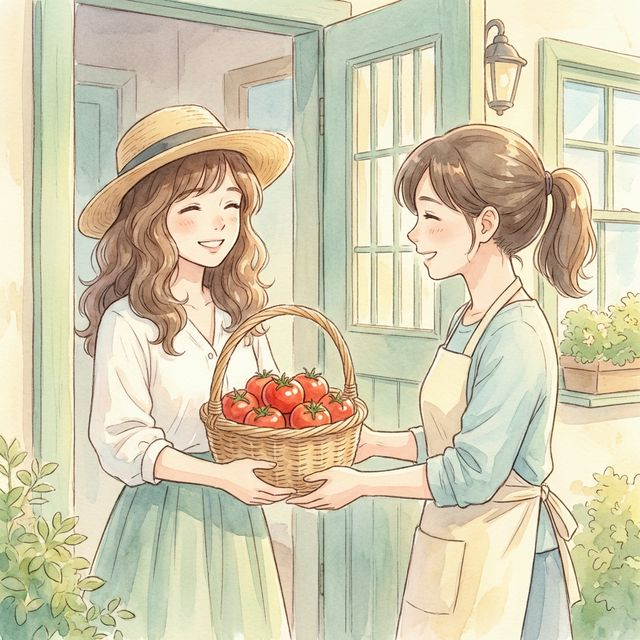
取れすぎた家庭菜園のトマトをお裾分け
「もったいない」を「ありがとう」へ
Aさんは、家庭菜園でトマトが取れすぎてしまいました。余った分を楽市に出品。（500楽ポイントの奉公）
Bさんが、それを500楽ポイントで受け取ってくれました。（500楽ポイントの御恩）
Aさんはせっかく作った野菜を捨てずに済み、Bさんはお金を節約して新鮮なトマトを手に入れることができました。

本棚で眠っていた完結済み漫画セット
物語の感動を次の誰かへバトンタッチ
Cさんは、読み終わった漫画全巻セットの処分に困っていました。捨てるのは忍びなく楽市に出品。（1,000楽ポイントの奉公）
Dさんは、ずっと読みたかったその作品を見つけ、即座に交換。（1,000楽ポイントの御恩）
Cさんは本棚がスッキリ片付き、Dさんは休日の楽しみをお得に手に入れ、作品トークで盛り上がりました。
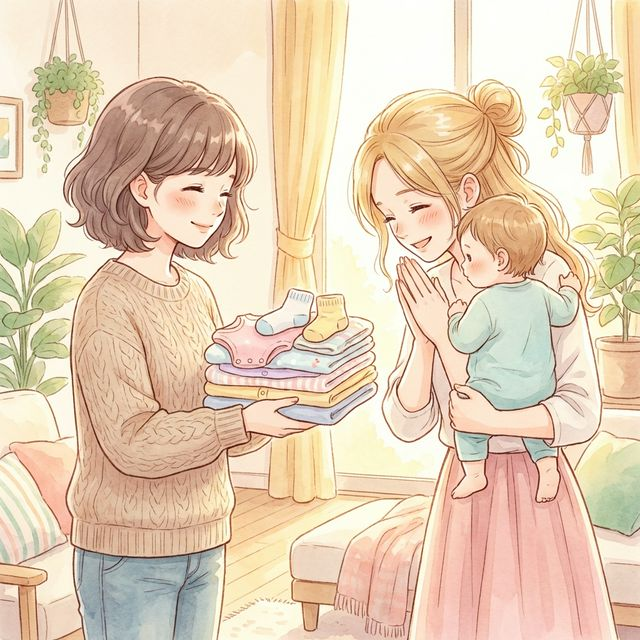
小さくなった子供服を譲渡
思い出の服が、次の世代の笑顔に
Eさんは、子供が成長して着られなくなった綺麗な服を「誰かに着てほしい」と出品。（800楽ポイントの奉公）
Fさん（新米ママ）は、保育園の着替えが足りず困っていたところこれを発見。（800楽ポイントの御恩）
Eさんはタンスの整理ができて思い出も引き継がれ、Fさんは「先輩ママのセンス素敵！」と大喜びでした。

スマホの操作がわからない！
「アプリの入れ方がわからない」「写真が送れない」など、スマホの困りごとを解決
Gさんは、スマホの初期設定がわからず困っていました。楽市で「スマホ設定手伝います」というHさんの投稿を発見。（800楽ポイントの御恩）
Hさんは得意な知識でササッと設定してあげました。（800楽ポイントの奉公）
Gさんはすぐにスマホを使えるようになり、Hさんは自分のスキルで感謝され、嬉しい気持ちになりました。
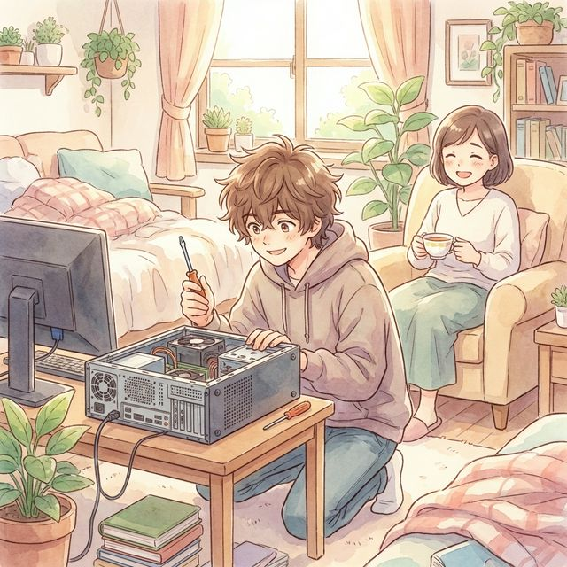
パソコンの不調・修理
「困った」が「助かった！」に変わる瞬間
Iさんは、仕事で使うPCが急に動かなくなり焦っていました。「プロに頼むと高いし…」と、近所の詳しい人に修理の依頼を出品。（2,000楽ポイントの御恩）
Jさんは、自作PCや機械いじりが趣味。「その症状ならすぐ直せそう」と、場所を聞いてすぐに訪問。（2,000楽ポイントの奉公）
Jさんが手際よく原因を特定して修理。データも無事で、Iさんは「本当に助かった！」と大感謝しました。
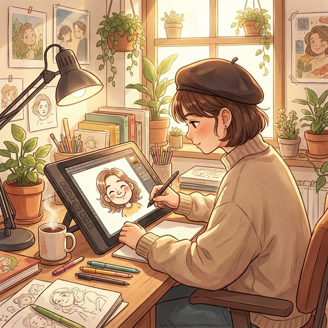
SNS用アイコンの似顔絵作成
「好き」なことが誰かの「助け」になる
Kさんは、絵を描くのが趣味で、SNSアイコン作成を募集。（1,200楽ポイントの奉公）
Lさんは、副業を始めたばかりで信頼できるプロフィール画像を探していました。（1,200楽ポイントの御恩）
Kさんは自分の絵が誰かの役に立ち自信がつき、Lさんは素敵なアイコンで活動をスタートできました。
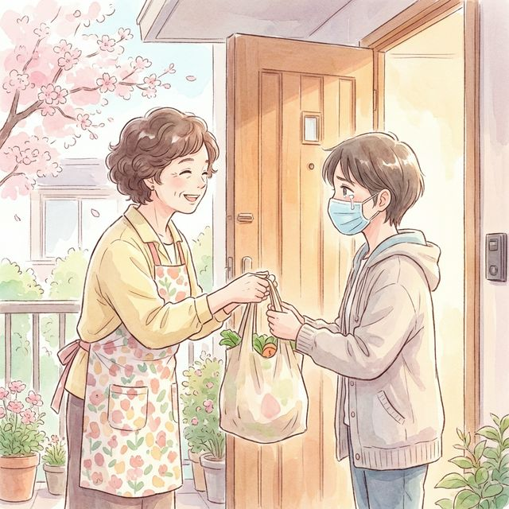
お買い物代行
（風邪で買い物ができない時など）
「急な体調不良で外に出られない」そんな時、近所の誰かが助けを依頼。
Mさんは、高熱が出て食料を買いに行けず困っていました。近所のNさんが買い物代行を楽市で引き受けました。（1,000楽ポイントの奉公）
Nさんは自分の買い物のついでにMさんの分も届けてあげました。（1,000楽ポイントの御恩）
Mさんは安心して療養でき、Nさんは「困った時はお互い様」と温かい交流が生まれました。

忙しい日のワンちゃんの散歩代行
忙しい日々を地域でサポート
Oさんは、急な残業で帰宅が遅くなり、愛犬の散歩に行けず焦っていました。（800楽ポイントの御恩）
Pさん（犬好きの学生）は、犬と触れ合いたいと思い、散歩代行を引き受けました。（800楽ポイントの奉公）
Oさんは安心して仕事に集中でき、Pさんは可愛いワンちゃんと楽しい時間を過ごし、犬も大満足でした。
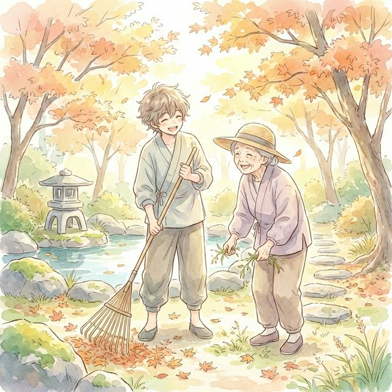
お庭の掃除・草むしり
「足腰が痛くて庭の手入れができない」そんな悩みを解決。
Qさん（高齢者）は、庭の雑草が伸び放題で足腰も痛く、手入れができずに困っていました。（2,000楽ポイントの御恩）
Rさん（園芸好き）は、土いじりが好きで、草むしり代行を楽市で引き受けました。（2,000楽ポイントの奉公）
Qさんは庭がスッキリして気持ちよく過ごせ、Rさんは「無心になれてリフレッシュできた」と喜ばれました。
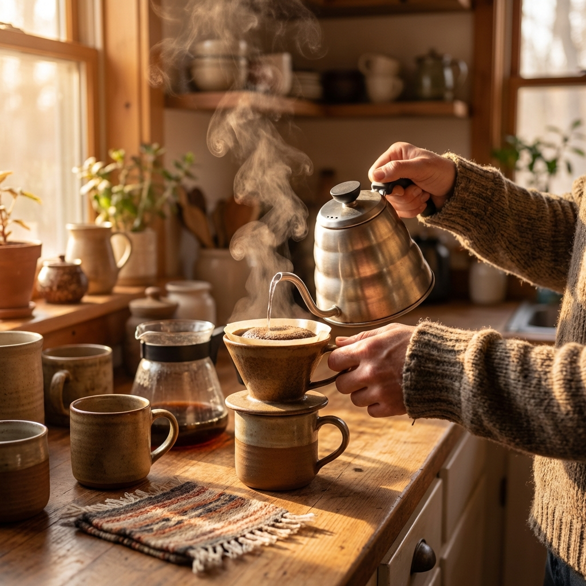
雨の日限定！カフェの空席活用
「もったいない空席」を「新しい出会い」へ
S店長（カフェ経営）は、雨でお客さんが来なくてパンが余りそうでした。楽市で「雨宿りセット（コーヒー＆パン）」を500楽ポイントで出品。（500楽ポイントの奉公）
Tさん（近所の主婦）は、おやつを探していてこれを見つけ、ポイントで交換。（500楽ポイントの御恩）
S店長はフードロスを防ぎつつお店の宣伝になり、Tさんは美味しいカフェタイムをお得に楽しめ、新しいお店の常連になりました。
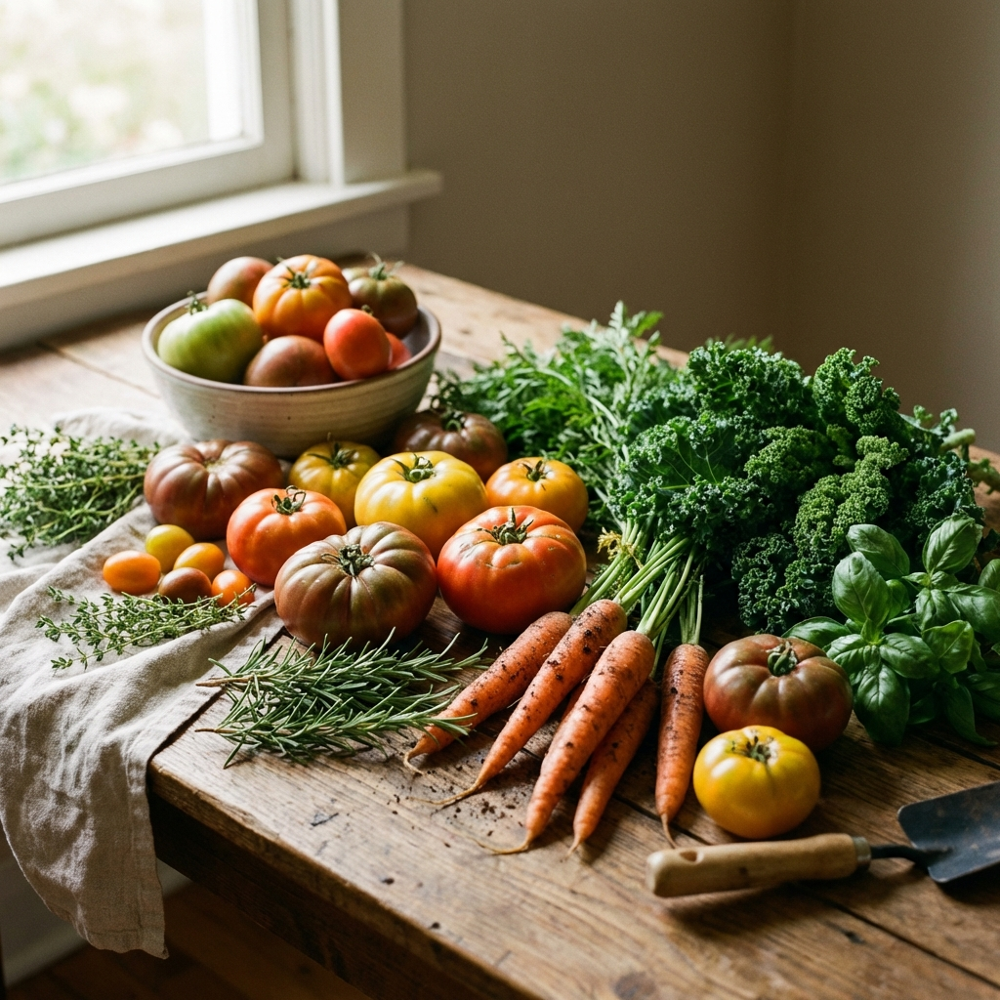
閉店間際の「おたすけ惣菜セット」
美味しく食べて、お店を応援
U店長（惣菜店）は、作りすぎた唐揚げ弁当が廃棄になりそうで心を痛めていました。（600楽ポイントの奉公）
Vさん（独身サラリーマン）は、仕事帰りに夕食を作る元気がなく、楽市でこれを発見。（600楽ポイントの御恩）
U店長は廃棄ゼロを達成し、Vさんは手作りの温かいお弁当で元気をチャージできました。
ハンドメイド作品の委託販売スペース
お店の一角が、誰かのギャラリーに
Wさん（作家）は、趣味で作ったアクセサリーを販売する場所がなく、楽市で展示場所を募集。（売上の10%を奉公）
X店長（美容院）は、店内の空きスペースが寂しいと感じており、Wさんの作品を置くことに。（場所提供の御恩）
Wさんはファンが増えて創作意欲が湧き、X店長は「待ち時間が楽しくなった」とお客さんに好評で会話が弾みました。
地域の交流を生み出す
楽市が真に大切にしているのは、単なるモノやスキルの交換ではありません。
その裏側にある「助け合い」「おかげさま」という温かい想い。
楽ポイントは、その感謝の思いを可視化することです。
あなたの得意が誰かの助けになり、
その感謝がまた次の交流を生む。
この循環と交流こそが、
私たちがつくりたい新しい地域経済の姿です。
楽市に参加する
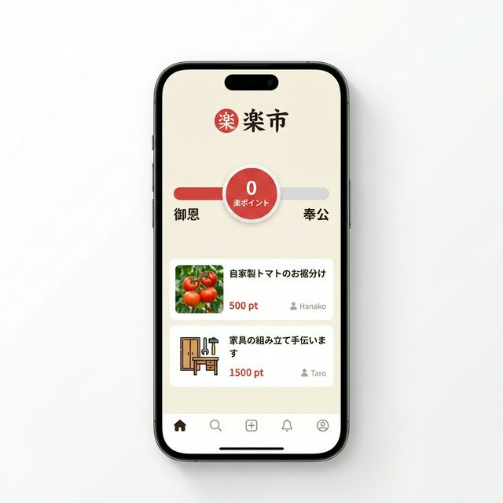
楽市は現在、コミュニティメンバーを募集しています。
お金に依存しない新しい経済圏を、一緒に作りませんか？
※現在はベータ版運用中です。